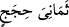

sana nikâhlamak istiyorum.”
Bu kız, bu surenin 29. âyetinde “
Âilesine dedi ki: Siz durun...” diyen
Safûriyâ’dır.
“
bana
hizmet
şartıyla…”
ifâdesi
“
Seni
evlendireceğim” deki mef’ulden haldir.
Arap dilinde başkasına işçi olmayı kabul ettiğin zaman, “
Ona ecir oldum” denilir.
Bu, baba olduğun zaman “
O’na baba oldum” demene benzer. Nitekim Keşşâf’ta da
bu şeklide geçmiştir.
Mânâsı şöyledir: Bana ücret karşılığı hizmet etmen sana şart kılınarak veya gerekli
(vâcib) görülerek…
“
(sekiz yıl)” ifâdesi, zarftır. “
(sene, yıl)” kelimesinin çoğuludur. Bu süre
kızın babası Şuayb (a.s.)’ın şartıdır, mehir değildir. Çünkü âyette “
(bana
ücretle...)” denilmiştir; “
(ona (kıza) ücret karşılığında...)” değil. Ancak o zamanki
şeriatte, kızın velisi lehine belli bir süre çalışma şartıyla nikah akdi câizdir. Nitekim
bizim şeriatımızda da mâlum bir süre için koyun gütme şartıyla nikahlanmak câizdir.
Aynü’l-me’ânî’de şu bilgi vardır: Eski şerîate göre kızların mihri babalara âiddi,
onlar tutarlardı. Bizim şeriatimizde ise “Kadınlara mehirlerini gönül rızâsı ile
(cömertçe) verin; eğer gönül hoşluğu ile o mehrin bir kısmını size bağışlarlarsa
onu da afiyetle yeyin.” (en-Nisâ, 4/4) hükmü gereği bu neshedilmiştir. Eğer mehirden
faydalanma söz konusu ise İmam-ı Azam’a göre bu memnu; İmam Şâfiî’ye göre
değildir.
Nikâhta mutlaka mehir verilmesi gerekir. İslam’a göre mehir kıymetli (mütekavvem)
bir maldan olmalıdır. Zira Allah Teâlâ şöyle buyurmuştur: “
mallarınızla
(mehirlerini vererek) istemeniz…” (en-Nisâ, 4/24).
Mehir, kadına teslim edilmelidir. Allah Teâlâ şöyle buyurur: “
Kadınlara mehirlerini gönül rızâsı ile (cömertçe) verin…” (en-Nisâ, 4/4).
Kur’ân öğretme karşılığında yahut bir sene onun namına çalışma şartıyla evlenirse
nikah yine sahih olur. Ancak Kur’an öğretme ve hizmet etme kıymeti olan (mütekavvem)
bir şey olmadığı için bunlar mihr-i misle döner. Bu durum, kocanın hür olması
durumunda böyledir. Şâyet koca köleyse mehir karşılığı olarak kadının hizmetinde
bulunabilir. Çünkü kölenin hizmeti, rakabesini (varlığını) teslim etmeyi içine aldığı için
mal talebi demektir; hür ise böyle değildir.
Burada (sekiz yıl hizmet), ister mehre, ister şarta hamledilsin Şuayb (a.s.)’ın şeriatı
uygulanır. Zira mehir bizim şeriatımızda babaya değil, kadına âiddir. Şart, Şâfiî’ye göre
câiz olsa da, mehrin menfaatini celbettiği için imamımız Ebû Hanife’ye göre bu men
edilmiştir.
Bazıları demiştir ki: Şuayb ve Mûsâ (a.s.) hakkında zikredilen bu hâdise, ikisinin
yapmağa karar verdiği ve vukûunda ittifak ettikleri husûsu beyan etmek içindir; yoksa bu